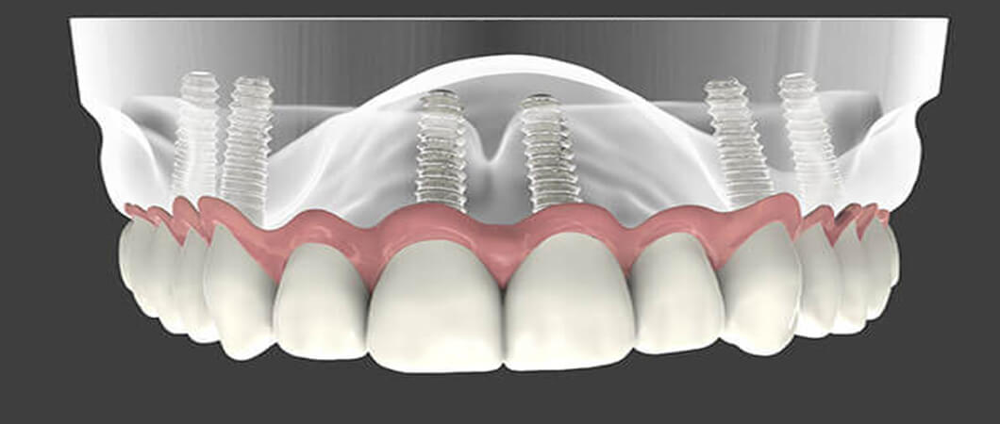
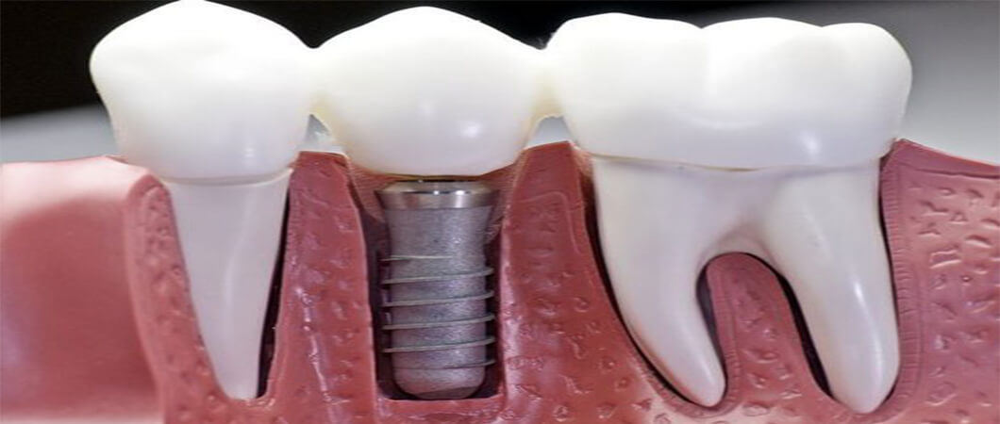
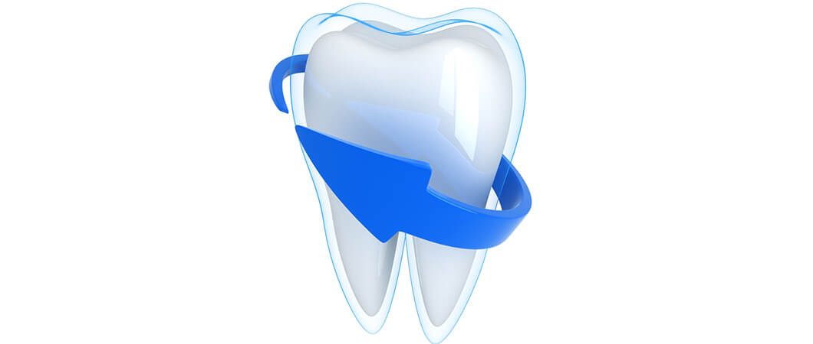
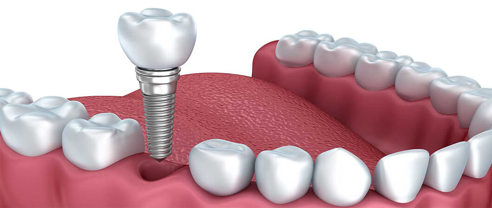

علاج وزراعة الأسنان
تعرَّف من خلال مقالاتنا على أحدث تقنيات علاج الأسنان، وأنجح الأساليب الوقائية للتمتع بأسنان صحيَّة قويَّة، إضافة إلى عمليات زراعة الأسنان، والجسور، والتقويم، وغيرها من المعلومات المتنوعة

ماهي زراعة الأسنان في تركيا ؟ مخاطرها وانواعها
شهدت السنوات الأخيرة إقبالاً قياسيّاً على عمليات زراعة الأسنان في تركيا، وتجذب السياحة العلاجية في تركيا العديد من مواطني الدول العربيّة والأوربية، ويعود ذلك إلى الأسعار التشجيعيّة للغاية مقارنة مع دول الاتحاد الأوربي مثلاً، فضلاً عن الخبرات الطبيّة الرائدة والمدرّبة على أحدث التجهيزات الطبية في مجال زراعة الأسنان.
جدول المحتويات
تقنيات زراعة الأسنان في تركيا
تعرف على تقنيات زراعة الأسنان التي تقدمها علاجك الطبية في تركيا

تعتمد طريقة القيام بهذه العملية على طبيعة الزراعة وحالة عظام الفكين لديك، وقد تتضمّن عدة جلسات.
الزراعات السنية تتمّ من خلال عملية جراحية بسيطة داخل عظام اللّثّة، حيث تشكّل جذراً قوياًّ للسنّ المزروع.
اقرأ أكثر : زراعة الأسنان الفورية " في يوم واحد " في تركيا
شروط عملية زراعة الأسنان ؟
- عظام الفكّ لديك وصلت إلى حدّ البلوغ وتوقّف النموّ.
- عظام الفكّ لديك قويّة لاستيعاب الجذر المزروع، أو أنت قادر على استقبال رقعة عظمية.
- تمتلك أنسجة فمويّة صحّيّة.
- لا تعاني من مشاكل صحيّة تؤثر على التئام العظام في الفكّين.
- غير قادر أو لا ترغب في تركيب الأسنان او الجسور.
- تريد أن تحسن طريقة كلامك.
- لديك الاستعداد الكافي للالتزام بالخطّة العلاجيّة.
مخاطر زراعة الاسنان
- الالتهاب مكان الزراعة.
- إصابة أو تضرّر الأسنان المجاورة.
- تضرّر العصب ما يمكن أن يسبّب الألم، أو الخذلان في الشفة واللثة أو الذقن.
- مشاكل في الجيوب في حال زراعة الأسنان العلويّة.

كيفية زراعة الاسنان في تركيا
- فحص أسنان شامل، باستخدام صور الأشعة والتصوير ثلاثي الأبعاد لعمل نموذج كامل لأسنانك وفكّيك.
- مراجعة تاريخك الصحيّ، فينبغي عليك أن تخبر طبيبك بأيّ مشاكل صحيّة مررت بها أو أيّ ادوية تأخذها بشكل مستمرّ سواء كانت أدوية بوصفة طبية أو بغير وصفة طبية، وكذلك المكملات الغذائية والأعشاب.
- الإبلاغ في حال كنت تعاني من أمراض القلب أو السكريّ أو عمليّات سابقة في العظام.
- من الممكن أن يعطيك طبيبك مضادّاً حيويّاً لعدّة أيام قبل العمليّة لتجنّب حدوث التهابات.
اقرأ اكثر : عدسات الأسنان الفينير -المميزات والعيوب


مراحل زراعة الاسنان في تركيا
- إزالة العظم السنّيّ التالف.
- تحضير عظام الفكّ وأحياناً زراعة نسيج عظمي في الفك.
- زراعة الجذر في الفك.
- انتظار نموّ العظام حول الجزء المزروع والتئامه.
- وضع الدعامات تمهيداً لزراعة السن الصناعي.
- تركيب السن الصناعي.
زراعة نسيج عظمي لتقوية الفك - زراعة عظم الفك
اقرأ أكثر : عملية زارعة الأسنان وانواعها وماهي الزراعة الفورية
زراعة جذر السن في تركيا
مرحلة انتظار نمو العظم

تركيب أساس السنّ على الجذر المزروع
تعرف على خدمات علاجك الطبية لعلاج الأسنان في تركيا
الم بعد زراعة الاسنان
- انتفاخ بسيط في اللثة وأسفل الوجه.
- ازرقاق في اللّثّة.
- ألم في مكان الجزء المزروع.
- نزيف بسيط مكان السن المزروع.
وفي حال مواجهتك لبعض مشاكل زراعة الاسنان، نقدّم لك المقترحات التالية:
- ربّما ستحتاج لاستخدام مسكّنات أو مضادّات حيويّة بعد العمليّة، وفي حال حدوث تورّم شديد أو عدم راحة في مكان السن المزروع، او أي مشاكل أخرى عليك باستشارة طبيبك مباشرة.
- بعد كلّ جلسة من جلسات العمليّة من الأفضل تناول أطعمة طريّة حسب إرشادات طبيبك إلى حين التئام مكان الزراعة.
- الغالبية العظمى من عمليات زراعة الأسنان تُكلّل بالنجاح، ونادراً ما يفشل العظم في الالتئام تماماً حول الجذر المزروع، وهذه المشاكل يقوم بتقييم نسبة حدوثها طبيبك الخاصّ بأخذه تاريخك الصحّيّ وعلاجاتك المستخدمة إن وجدت.
- في حال حدوث التئام غير تامّ للنسيج العظميّ في الفكّ ربما سيتحتّم على الطبيب إزالة الجذر المزروع وستتمّ إعادة المحاولة بعد فترة ثلاثة أشهر.

ما بعد زراعة الاسنان
- حافظ على صحّة فمك وأسنانك، وحاول إبقاء فمك وأسنانك ولثّتك نظيفة طوال النهار.
- استخدم فرشاة أسنان مصمّمة بحيث تستطيع الدخول بين الأسنان.
- تابع طبيبك باستمرار وحافظ على مواعيد الزيارات.
- تجنّب العادات المضرّة بالأسنان، مثل مضغ الأشياء القاسية، كالحلوى القاسية أو المكسّرات التي من الممكن أن تضرّ بأسنانك الطبيعيّة أوالمزروعة.
- حاول الابتعاد قدر الإمكان عن السجائر والقهوة.
سؤال وجواب عن زراعة الأسنان
تم استخدام زراعة الأسنان الحديثة منذ الستينيات.
فيما يلي الأنواع الشائعة لمواد زراعة الأسنان المستخدمة في صنع زراعة الأسنان اليوم. • مواد التيتانيوم لزراعة الأسنان - مصنوعة من المعدن ، ويعتبر التيتانيوم أكثر أنواع مواد زراعة الأسنان شيوعًا • مواد الزركونيا لزراعة الأسنان - على عكس التيتانيوم ، يعتبر الزركونيا اختراعًا حديثًا.
نعم, يمكن ازالة غرسات الأسنان لتغيير خطة العلاج او عند فشل عملية الزراعة بالكامل.
لا ، زراعة الأسنان مثبتة في العظام مثل الأسنان الطبيعية.
يقوم أطباء الأسنان بالخطوات التالية لزراعة الأسنان: • شق جراحي لفتح اللثة وكشف العظام. • حفر ثقوب عميقة في العظام حيث سيتم تثبيت دعائم زرع الأسنان. • مكان دعامة • خذ الانطباع النهائي • إرفاق التاج.
إذا كنت تبحث عن زراعة أسنان ذات نوعية جيدة وبأسعار معقولة ، فيجب أن يكون علاجك الطبية في اسطنبول على رأس قائمتك.
زراعة الأسنان هي عملية ترميم دائمة للأسنان ، مع جمالية أفضل ، أسهل في الصيانة ، غير ضارة باللثة والعظام ، وعمر أطول.
تعمل زراعة الأسنان على تحسين ابتسامتك وقد تؤدي إلى عملية تجميل افتراضية للوجه من خلال استعادة الارتفاع الرأسي الذي تم تقليله عندما فقدت أسنانك الطبيعية.
نعم ، بالمقارنة مع إجراءات ترميم الأسنان الأخرى ، تم تصميم زراعة الأسنان لتكرار شكل ولون الأسنان الطبيعية.
نعم ، قد تحدث عدوى حول زراعة الأسنان في شكل من أشكال أمراض اللثة المعروفة أيضًا باسم التهاب ما حول زرع الأسنان لأسباب جهازية أو محلية مثل تدخين التبغ وسوء نظافة الفم والسكري وأمراض المناعة.


تحرير: علاجك الطبية©
اطلع على أحدث المنشورات والأخبار الطبية
عمليات شفط الدهون بالفيزر في تركيا والأسعار 2021
يعتبر شفط الدهون بالفيزر من أفضل عمليات علاج السمنة المفرطة. تعرف معنا على مميزات وعيوب شفط الدهون بالفيزر وكيف تتم العملية وشاهد الفرق قبل وبعد في تركيا.
طرق علاج طول النظر في تركيا وأحدث التقنيات
يعاني الكثير من كبار السن وحتى البالغين من مرض طول النظر . سنتحدث في هذا المقال عن كيفية علاج طول النظر وأسباب هذا المرض ونسبة نجاح العلاج .
الفرق بين زراعة الشعر في ايران وتركيا 2021
بالرغم من أن أسعار زراعة الشعر بين تركيا وايران لا تختلف كثيرا إلا أن هنالك الكثير من الفروق التي قد تحدد لك الدولة الأفضل لزراعة الشعر فيها.
طرق علاج قصر النظر في تركيا وأحدث التقنيات
يعاني الكثير من الأطفال وحتى البالغين من مرض قصر النظر. سنتعرف في هذا المقال على أفضل طرق علاج قصر النظر وأسباب هذا المرض ونسبة نجاح العلاج .